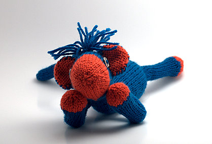
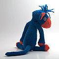
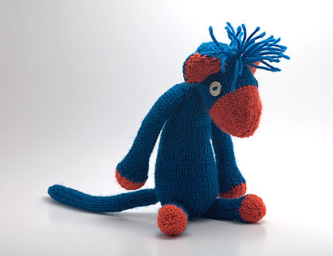

|
||
Premium Patterns Wintry Mix Mitts Love Bytes HawkeyeFree Patterns Kiddie Cadet Summerlin Ruffled Scarf Seamless DS Sock Simply Seamless Pouch Myriads of MushroomsExtras DIY Mitten Blocker Felt Patch Tutorial Yarn Dyeing Tutorial Needle Pouches Knitting Journal |
April 19, 2007 - Posted by Grace SchneblySBM Seeking MateMisunderstood SBM (single blue male) seeks accident-prone female playmate for sock matching, counting sheep, and tractor pulls. Must listen to Marvin Gaye, enjoy finger painting, and be tolerant of bad hair days. Clean underwear a plus. John Basedow impersonators need not apply.  Project Specs I love how my Mr. Dangly turned out! He has so much personality and can be posed almost any way. I have lots of great poses in mind for him so look for another Mr. Dangly photo shoot in the future! Now my Mr. Dangly spends most of his days monkeying around and making a mess (or I just blame my messes on him!). I can tell he wants a Mrs. Dangly to keep him company. This is another one of those patterns you can make it your own to reflect your personality. This is a cute pattern for sure. But since I hate seaming, I had to change it. The original pattern calls for all pieces to be worked flat, and then seamed up later. I changed it so all pieces are knit in the round to save time, as well as my sanity! It was simple to convert the pattern to be worked in the round, basically instead of turning when you get to the end of a row, just work right into the next row (of course you will need to be using dpns). This way you only need to use knit stitches, and best of all no seams, yay! I knit the body piece, stuffing as I went. Once I got down to the final set of decreases, the instructions were incorrect. The numbers don’t add up, so I just finished off the bottom my own way. I also ended up reworking the head. The arms, legs, ears, and tail were all knit according to the original pattern, but worked in the round. Final set of body decreases: I tried the head a few different ways, but ended up changing it quite a bit. I tried to keep it looking almost exactly like the original. You will need to stuff it as you go. You want to make the head to be flatter on the sides where his eyes and ears will be, then rounded on the top and bottom. Kind of shaped like a blimp. Head:  Happy knitting, and good luck creating a clone of Mr. Dangly! |
   Recent ReviewsRecent Posts
 Our Favorites
|
| © 2007 KathrynIvy.com | ||
{kind=link}
{kind=link}